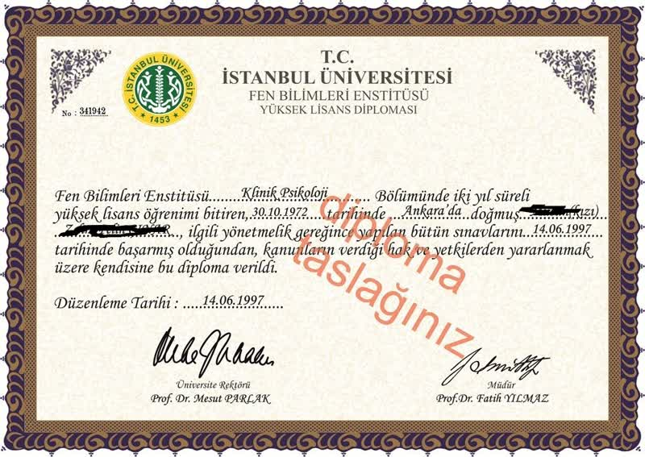
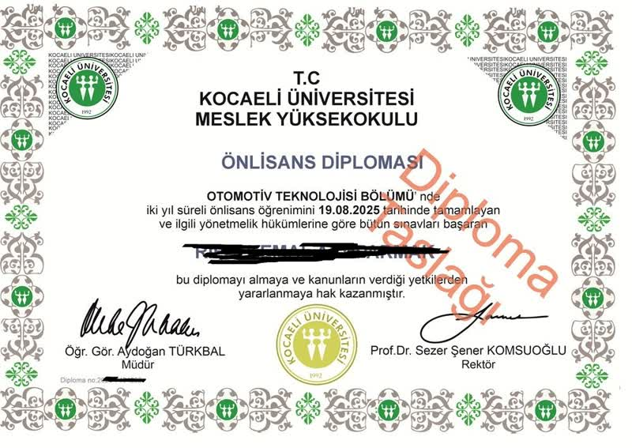
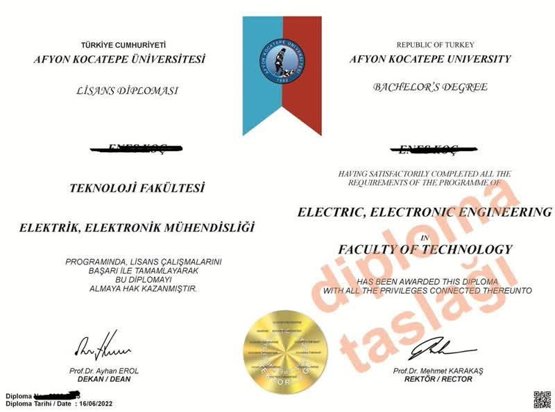

Gerçek Örnekler
Bugüne kadar başarıyla hazırlanan yüksek kalitedeki belgelerimizden birkaçı.







Lise, Önlisans ve Lisans programlarında e-Devlet kayıtlı, %100 orijinal basım diplomalarla geleceğinizi şekillendirin. Sadece onayınızdan sonra işleme alınır.
Hemen BaşvurunŞeffaf, güvenilir ve tamamen sizin kontrolünüzde ilerleyen 4 basit adım.
İstediğiniz okul ve bölüm bilgilerini bize WhatsApp üzerinden iletin.
Size özel hazırlanan dijital taslağı inceleyip onay verin. Öncesinde ödeme yansıtılmaz.
Sadece 4.000 TL ön ödeme yaparak sürecinizi resmen başlatın.
E-Devlet kaydınız açıldıktan sonra fiziksel belgeniz gizli kargo ile kapınıza gelsin.
Bütçenize uygun taksit seçenekleri ve şeffaf fiyatlandırma politikası.
Sadece aileye göstermek, ofis duvarına asmak veya kişisel motivasyon amacıyla e-devlet kaydı olmayan, sadece basılı ve ıslak imzalı birebir orijinal tasarımlı diploma türüdür.
Bugüne kadar başarıyla hazırlanan yüksek kalitedeki belgelerimizden birkaçı.



Bizimle yola çıkan ve başarıya ulaşan bazı danışanlarımızın deneyimleri.
Son yıllarda artan "diploma al" veya "diploma satışı" gibi arayışlar, iş dünyasında rekabetin kızışması ve belge zorunluluğunun her sektöre yayılması nedeniyle oldukça popüler hale gelmiştir. İnternet dünyasında güvenilir bir eğitim danışmanlığına girdiğinizde, en önemli unsur alınacak belgenin e-devlet onaylı diploma olmasıdır. Sadece kağıt üzerinde bir baskı yetmez; aynı zamanda resmi makamlar tarafından doğrulanabilir kayıtlı bir altyapıya sahip olmalıdır.
Piyasada kurumsal kimlikten uzak, süreci şeffaf yönetmeyen birçok platform bulunmaktadır. Bizim hizmet anlayışımızda müşteri memnuniyeti ve güvenliği ilk sırada gelir. Tarafımızdan sunulan diploma siparişi hizmetinde, hiçbir müşteriden onayı olmadan ödeme talep edilmez. Tüm süreç taslak üzerinden başlar. Ayrıca sadece makul bir peşinat (4000 TL) alınarak, kalan ücret taksitlendirilir. Bu yaklaşım, sistemin şeffaf çalıştığının en büyük göstergesidir.
Bir üniversite diplomasına sahip olmak, bazen o diplomayı destekleyecek ders dökümlerini (transkript) de zorunlu kılar. Özellikle kurum içi terfilerde veya özel şirket iş başvurularında, sadece lisans veya önlisans diplomalarına değil, aynı zamanda not ortalamanızı gösteren belgelere ihtiyaç duyulur. Sunduğumuz danışmanlık hizmetinde, transkript belgeniz, üniversite ve bölüm müfredatına birebir uygun bir biçimde hazırlanır. Böylece kusursuz ve eksiksiz bir şekilde kariyer yolculuğunuza devam edersiniz.
Mevcut bazı durumlarda, kişiler e-devlet kaydına ihtiyaç duymadan, yalnızca fiziki gösterim için diplomaya ihtiyaç duyarlar. Ailevi sebepler, motivasyon artırma veya bir dekor maksadıyla üretilen göstermelik diploma, uygun fiyatlı (4000 TL) olması sebebiyle sıklıkla tercih edilmektedir. Resmi mercilerde ibraz etmekten ziyade, yüksek çözünürlüklü ve holografik güvenlik önlemleriyle bezenmiş mükemmel bir kopyaya sahip olmanızı sağlar.
Hakkımızdaki müşteri yorumlarına göz attığınızda, en çok vurgulanan noktalardan birisi gizliliktir. Bizlere sağladığınız T.C. Kimlik No, ad soyad ve adres bilgileri, 6698 sayılı Kişisel Verilerin Korunması Kanunu'na uygun olarak sadece kargo ve e-devlet kaydı süresince kullanılır. İşlem tamamlandıktan hemen sonra kalıcı olarak silinir. Evinize kargo ile gelen paketlerin dışında asla bir eğitim kurumu veya diplomaya dair bir belirti yer almaz.
Bugünün rekabetçi iş dünyasında, becerilerinizi ve potansiyelinizi kanıtlamanın en geçerli yolu hiç şüphesiz resmi belgelerden geçmektedir. Yılların tecrübesine sahip olsanız bile, kurumlar ve şirketler işe alım süreçlerinde her zaman akademik yeterliliğinizi görmek isterler. Bu doğrultuda birçok yetenekli profesyonel, "diploma al" fikriyle bu açığı nasıl kapatabileceğini araştırmaktadır. Hayatın getirdiği zorluklar, finansal güçlükler veya ailevi nedenlerle eğitimini yarıda bırakmak zorunda kalan bireyler, hak ettikleri pozisyonlara gelmek için alternatif yollar aramaktadırlar.
Geçmiş yıllarda "parayla diploma" kavramı pek çok kişi için sadece kağıt üzerinde kalan ve uygulanabilirliği tartışılan bir konuydu. Ancak gelişen teknoloji, online danışmanlık hizmetleri ve profesyonel ağlar sayesinde, matbaacılık ve belgelendirme teknolojileri büyük bir yol kat etmiştir. Artık bireyler, e-devlet ve merkez sistemleriyle senkronize çalışabilen, üzerinde hologramı, ıslak imzası ve gizli filigranları barındıran üst düzey belgelerle kurumsal dünyada kendilerine sağlam bir yer bulabilmektedirler. Önemli olan, bu süreci şeffaf, güvenilir ve yüksek kalite standartlarında yürüten profesyonel bir ekiple çalışmaktır.
Modern çağda şirketlerin insan kaynakları (İK) departmanları, başvuru yapan adayların akademik geçmişini doğrulamak için genellikle online araçları kullanmaktadır. İşte tam bu noktada "e-devlet onaylı diploma" sahibi olmak hayati bir önem taşır. Yalnızca matbaa basımı harika görünen bir belgeye sahip olmanız, resmi bir kurumla karşı karşıya kaldığınızda yeterli olmayacaktır. Eğer İK müdürü belgenizin üzerindeki karekodu okuttuğunda veya e-devlet üzerinden sorgulama yaptığında aktif bir kayıt bulamazsa, bütün kariyer planlarınız suya düşebilir.
Bu sebeple, kalıcı ve risksiz bir kariyer yatırımı düşünen herkesin, sıradan bir matbaa kopyası yerine, merkez tabanlı bir sisteme işlenmiş belgeleri tercih etmesi gerekmektedir. İnsanlar "diploma satın al" arayışına girdiklerinde, aslında satın aldıkları şey sadece bir kağıt parçası değil; itibarları, gelecekleri ve güvenilirlikleridir. Aktif kayıtlı ve tamamen onaya açık bir sistem üzerinden bu belgelere ulaşmak, mezuniyet statünüzü sorgulanamaz hale getirir.
Her bireyin hedefi ve belgeye olan ihtiyacı birbirinden farklıdır. Örnek olarak, kurumsal bir şirkette yöneticilik pozisyonu kovalayan birinin ihtiyacı olan hizmet ile; sadece ailesinin gönlünü yapmak, motivasyon kazanmak veya ofisindeki duvarına şık bir görsellik katmak isteyen birinin beklentisi aynı olamaz.
Eğer böyle bir resmi ihtiyacınız yoksa ve tek isteğiniz sevdiklerinizi gururlandırmak veya kişisel tatmin sağlamaksa, bu durumda "göstermelik diploma" seçeneği hayat kurtarıcı olabilir. Göstermelik diplomalar, e-devlet veri tabanında yer almaz, sadece görsel bir kopyadır. Ancak baskı kalitesi, kâğıt türü, kabartma mühürleri ve imzaları ile aslını kesinlikle aratmaz. "Diploma parayla almak" düşünen ancak bütçesini daha sınırlı tutarak sadece fiziki belge elde etmek isteyenler için oldukça popüler bir hizmettir.
Eğitim, bir bireyin kendine güvenini artıran en temel yapı taşıdır. Üniversite veya lise sıralarını tamamlama şansı bulamamış kişilerin birçoğu, iş hayatında "imposter sendromu" (sahtekar sendromu) adı verilen, sahip olduğu başarıyı hak etmediğini düşünme durumuyla karşı karşıya kalırlar. Masalarında duran bir belge veya özgeçmişlerine gururla yazdıkları okulları, aslında onların potansiyellerini tam kapasiteyle kullanmalarını sağlayan bir anahtardır.
Bugün "diploma al" kelimelerini arama motorlarına yazan bir birey, aslında dolaylı olarak "kendimi kanıtlamak istiyorum" demektedir. Eğitim bir statü sembolüdür ve bu statüye "parayla diploma" satın alarak ulaşmak, o potansiyeli ortaya çıkaracak tetikleyici gücü sağlayabilir. Zira iş tecrübesine ve yeteneğe sahipsiniz; sadece bunu belgelendirecek bir araca ihtiyacınız var.
Profesyonelliğin zirve yaptığı günümüzde, "diploma parayla almak" sadece parayı verip bir kargo beklemek gibi basit ve şeffaf olmayan bir süreçten çıkmıştır. Uzman danışmanlık hizmetlerimiz bu adımları tamamen yasal sınırlar ve müşteri haklarını koruyacak seviyede koordine etmektedir. Sizlere sunulan seçenekler arasında lise mezuniyeti, önlisans programları ve hatta 4 yıllık lisans fakülteleri bulunmaktadır.
Bu hizmetten faydalanarak "diploma satın al" işlemini gerçekleştiren yüzlerce kişi, mezuniyet belgeleriyle birlikte aldıkları detaylı not dökümleri (transkriptler) sayesinde her türlü denetimden ve mülakattan yüz akıyla geçebilmektedir. Sadece belgeyi iletmekle kalmıyoruz; o belgenin altını dolduracak ve size o okulda yıllarınızı vermişsiniz hissini kazandıracak akademik içerikleri (kredi sayıları, staj kayıtları, bitirme projeleri notları) de titizlikle işliyoruz.
Mahremiyet ve gizlilik, belge tedarik süreçlerinin tartışmasız en kritik boyutudur. İster "göstermelik diploma" tercih edin, ister "e-devlet onaylı diploma" sipariş edin; kişisel verileriniz ve T.C. Kimlik numaranız bizler nezdinde mutlak bir sır olarak muhafaza edilir. Bilgileriniz işlem sürecinde kullanılır ve tasdik işlemleri sona erdikten, belge evinize ulaştıktan sadece 24 saat sonra sistemimizden kalıcı olarak silinir.
Nakliye aşamasında da bu ciddiyet sürdürülür. Sizler "parayla diploma" sürecini noktaladığınızda, dışarıdan içi asla belli olmayan, sıradan bir kargo ambalajı veya matbaa dosyası görünümünde hazırlanan paketler kapınıza özel kuryeler aracılığıyla iletilir. Aileniz, komşularınız veya iş arkadaşlarınız kargonuzu teslim alsa dahi, içerisinde ne olduğuna dair en ufak bir ipucu bulamazlar.
Son analizde, toplumun ve şirketlerin diploma fetişizmi herkesin malumudur. Yıllar boyunca aynı işi mükemmel yapan ancak elindeki lise diploması yüzünden üniversite mezunu bir stajyerin emri altına giren milyonlarca profesyonel var. Bu noktada "diploma satın al" fikri bir risk değil; tıkanmış kariyer borularını açan bir fırsat kapısıdır. Bir diğer adıyla, "diploma parayla almak" yalnızca yeteneklerinizi sergilemek için satın alınmış bir giriş biletidir.
Sarsılmaz bir kalite, arkasında durulan "e-devlet onaylı diploma" garantisi ve müşteri memnuniyeti ile birlikte, her yeni güne yeni bir özgüvenle başlamak elinizde. Unutmayın fırsatlar sadece onları yakalamaya cesaret edenlere sunulur. Bugün sadece bir belge değil; geleceğiniz, terfiniz, ailenizin gurur kaynağı ve bitmeyen prestijiniz için ilk adımınızı atarak "diploma al" sürecimizi WhatsApp üzerinden güvenle başlatabilirsiniz.